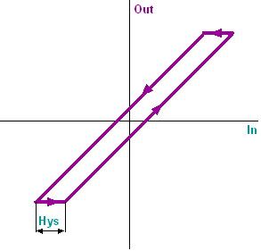

FILTER_H: Backlash
The FILTER_H (FB428) block creates an output variable in dependence of the set hysteresis.
Functionality
The following functions are integrated in the block:
- Adjustable hysteresis.
- Input value applied to the output via reset pulse.
The output variable stays at a value until the input variable has passed through hysteresis following a change of direction. The input value influences the output value if half of the hysteresis has been passed by the input value.

Enabling and disabling the function
When [EnFnct] = 1 (Yes), the function is enabled.
When [EnFnct] = 0 (No), the function is disabled. No new input values are acquired and calculation is stopped. The last value is available at output [Out].
Reset
When [Reset] = 1 (Yes), the input [In] is issued at output [Out].
Inputs
Pin | E | Description | |
EnFnct | p | Enable function. 1 (Yes): The function is enabled. 0 (No): The function is disabled. | |
In | pa | Input. | |
Reset | p | Reset. | |
1 (Yes) | [Out] = [In]. | ||
0 (No) | The function is operating. | ||
Hys | pa | Hysteresis. | |
Outputs
Pin | E | Description |
Out | a | Output. For an increasing input variable [In]: Output [Out] = input [In] – ½ hysteresis [Hys]. For a decreasing input variable [In]: Output [Out] = input [In] + ½ hysteresis [Hys]. |
Input values
Pin | Description | Data type | Default value | E.g. Engineering unit or Text group | Min. | Max. |
EnFnct | Enable function. | Boolean | 1 (Yes) | No, Yes |
|
|
In | Input. | Real | 0.0 |
| -3.403E38 | 3.403E38 |
Reset | Reset. | Boolean | 0 (No) | No, Yes |
|
|
Hys | Hysteresis. | Real | 1.0 |
| 0.0 | 3.403E38 |
Output values
Pin | Description | Data type | Default value | E.g. Engineering unit or Text group | Min. | Max. |
Out | Output. | Real | 0.0 |
| -3.403E38 | 3.403E38 |
Application
Typical applications are: Filtering of noise in signals (unstable input signals from pressure sensors, temperature sensors). Further applications: Stabilization of cascades with big amplification, 2-point switches with small switching difference, control loops with external deviations.
Process response
During the first cycle in the process, the filtered value is initialized with the input value and transmitted to the output. Filtering does not start until the second cycle in the process.
Troubleshooting
Standard (see General rules and information).